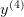
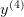
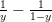
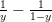
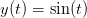
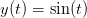

8.1 Método de Euler
Retornemos ao problema de valor inicial (8.1) dado por:

O Método de Euler aplicado à solução desse problema consiste em aproximar
a derivada  por um esquema de primeira ordem do tipo
por um esquema de primeira ordem do tipo

 é o passo do método, que consideraremos uma constante. Assim temos
(8.3) se transforma em:
é o passo do método, que consideraremos uma constante. Assim temos
(8.3) se transforma em:

Definimos, então,  e
e  como a aproximação para
como a aproximação para  produzida pelo Método de Euler. Assim, obtemos
produzida pelo Método de Euler. Assim, obtemos

 é a condição
inicial;
é a condição
inicial;  pode ser obtido de
pode ser obtido de  ;
;  , de  e assim por diante,
calculamos o termo
, de  e assim por diante,
calculamos o termo  apartir do anterior
apartir do anterior  .
.
Exemplo 8.1.1. Retornemos ao o problema de valor inicial do exemplo (8.2):

Cuja solução é  . O método de Euler aplicado a este problema
produz o seguinte esquema:
. O método de Euler aplicado a este problema
produz o seguinte esquema:


 , a solução aproximada pelo Método de Euler é
, a solução aproximada pelo Método de Euler é

 , mas se
, mas se  é pequeno, a aproximação é boa,
pois
é pequeno, a aproximação é boa,
pois

Vamos agora, analisar o desempenho do Método de Euler usando um exemplo mais complicado, porém ainda simples suficiente para que possamos obter a solução exata:

Podemos obter a solução exata desta equação usando o método de separação de variáveis e o método das frações parciais. Para tal escrevemos:
 |
O termo  pode ser decomposto em frações parciais como  e
chegamos na seguinte equação diferencial:
pode ser decomposto em frações parciais como  e
chegamos na seguinte equação diferencial:
 |
Integrando termo-a-termo, temos a seguinte equação algébrica relacionando  e
e  :
:
 |
Onde  é a constante de integração, que é definida pela condição inicial,
isto é,
é a constante de integração, que é definida pela condição inicial,
isto é,  em
em  . Substituindo, temos
. Substituindo, temos  . O que resulta
em:
. O que resulta
em:
 |
Equivalente a
 |
e
 |
Colocando o termo  em evidência, encontramos:
em evidência, encontramos:
 | (8.7) |
E, finalmente, encontramos a solução exata dada por  .
.
Vejamos, agora, o esquema iterativo produzido pelo método de Euler:

Para fins de comparação, calculamos a solução de 8.1.2 e de (??) para alguns
valores de  e de passo
e de passo  e resumimos na Tabela 8.1.
e resumimos na Tabela 8.1.


No exemplo a seguir, apresentamos um problema envolvendo uma equação
não-autônoma, isto é, quando a função  depende explicitamente do
tempo.
depende explicitamente do
tempo.

 .
.
O esquema recursivo de Euler fica:

Comparação
 |
No exemplo 8.1.4, mostramos como o Método de Euler pode ser facilmente estendido para problemas envolvendo sistemas de equações diferenciais..
Exemplo 8.1.4. Escreva o processo iterativo de Euler para resolver numericamente o seguinte sistema de equações diferenciais
 e .
e .
Par aplicar o Método de Euler a um sistema, devemos encarar as diversas incógnitas do sistema como formando um vetor, neste caso, encrevemos:


Exemplo 8.1.5. Escreva o problema de valor inicial de segunda ordem dado por

A fim de transformar a equação diferencial dada em um sistema de equações
de primeira ordem, introduzimos a substituição  , de forma que obtermos o
sistema:
, de forma que obtermos o
sistema: